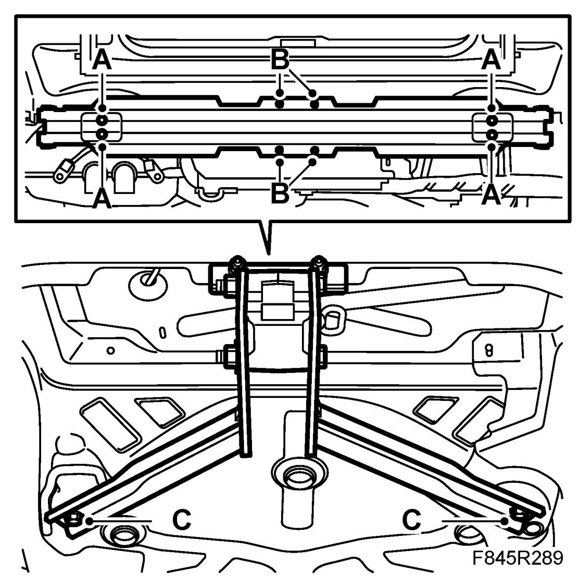

Trailer Hitch: Testing and Inspection
Checking The Tightening Torque, Towbar
Inspection
NOTE: Checking applies to both fixed and detachable towbars.
1. Remove the bumper shell, see Bumper shell, rear, 4D, Bumper shell, rear, 5D, Bumper shell, rear, CV.
2. Check the following tightening torques:
- Bumper member to body (A)
Tightening torque 50 Nm (37 lbf ft)

- Towbar to bumper member (B)
Tightening torque 50 Nm (37 lbf ft)
- Towbar to floor (C)
Tightening torque 50 Nm (37 lbf ft)
3. Fit the bumper shell, see Bumper shell, rear, 4D, Bumper shell, rear, 5D, Bumper shell, rear, CV.